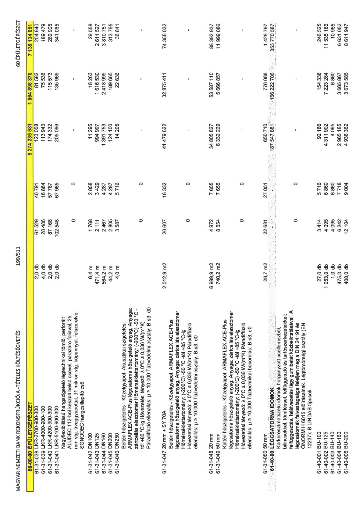

| Tétel | Menny. | Egys. | Anyag e.ár (net HUF) | Díj e.ár (net HUF) | Anyag összesen (net HUF) | Díj összesen (net HUF) | Anyag+Díj összesen (net HUF) |
|---|---|---|---|---|---|---|---|
| 61-31-038 LKR-2700-900-300 | 2,0 | db | 61 529 | 40 791 | 123 058 | 81 582 | 204 640 |
| 61-31-039 LKR-4000-900-100 | 4,0 | db | 28 486 | 18 884 | 113 943 | 75 536 | 189 479 |
| 61-31-040 LKR-4200-900-300 | 2,0 | db | 87 166 | 57 787 | 174 332 | 115 573 | 289 905 |
| 61-31-041 LKR-5100-900-300 | 2,0 | db | 102 548 | 67 985 | 205 096 | 135 969 | 341 065 |
| Nagyflexibilitású hangszigetelő légtechnikai tömlő, perforált ALUDEC 112-ből készült belső csővel, párazáró fóliával, 25 mm vtg. üveggyapottal, 31 mikron vtg. köpennyel, felszerelve, SONODEC hangcsillapító cső | 0 | 0 | 0 | 0 | 0 | 0 | 0 |
| 61-31-042 DN100 | 6,4 | m | 1 768 | 2 858 | 11 295 | 18 263 | 29 558 |
| 61-31-043 DN125 | 471,4 | m | 2 111 | 3 429 | 994 997 | 1 616 530 | 2 611 527 |
| 61-31-044 DN160 | 564,2 | m | 2 467 | 4 287 | 1 391 753 | 2 418 999 | 3 810 751 |
| 61-31-045 DN200 | 44,2 | m | 2 805 | 4 287 | 124 100 | 189 665 | 313 765 |
| 61-31-046 DN250 | 4,0 | m | 3 587 | 5 716 | 14 205 | 22 636 | 36 841 |
| Beltéri hőszigetelés - Kőzetgyapot, Akusztikai szigetelés: ARMAFLEX ACE-Plus légcsatorna hőszigetelő anyag, Anyaga: zártcellás elasztomer Hőmérséklettartomány: (-200°C) -50 °C - tól +85 °C-ig Hővezetési tényező: λ 0°C ≤ 0,036 W/(m*K) Páradiffúzió ellenállás: μ ≥ 10.000 Tűzvédelmi osztály: B-s3, d0 | 0 | 0 | 0 | 0 | 0 | 0 | 0 |
| 61-31-047 20 mm + SY 70A | 2 012,9 | m2 | 20 607 | 16 332 | 41 479 622 | 32 875 411 | 74 355 032 |
| Beltéri hőszigetelés - Kőzetgyapot: ARMAFLEX ACE-Plus légcsatorna hőszigetelő anyag, Anyaga: zártcellás elasztomer Hőmérséklettartomány: (-200°C) -50 °C -tól +85 °C-ig Hővezetési tényező: λ 0°C ≤ 0,036 W/(m*K) Páradiffúzió ellenállás: μ ≥ 10.000 Tűzvédelmi osztály: B-s3, d0 | 0 | 0 | 0 | 0 | 0 | 0 | 0 |
| 61-31-048 20 mm | 6 999,9 | m2 | 4 972 | 7 655 | 34 805 827 | 53 587 110 | 88 392 937 |
| 61-31-049 50 mm | 740,2 | m2 | 8 554 | 7 655 | 6 332 229 | 5 666 857 | 11 999 086 |
| Kültéri hőszigetelés - Kőzetgyapot: ARMAFLEX ACE-Plus légcsatorna hőszigetelő anyag, Anyaga: zártcellás elasztomer Hőmérséklettartomány: (-200°C) -50 °C -tól +85 °C-ig Hővezetési tényező: λ 0°C ≤ 0,036 W/(m*K) Páradiffúzió ellenállás: μ ≥ 10.000 Tűzvédelmi besorolás: B-s3, d0 | 0 | 0 | 0 | 0 | 0 | 0 | 0 |
| 61-31-050 50 mm | 28,7 | m2 | 22 681 | 27 051 | 650 710 | 776 088 | 1 426 797 |
| 61-40-000 LÉGCSATORNA IDOMOK | 0 | 0 | 0 | 0 | 187 547 881 | 166 222 706 | 353 770 587 |
| Körkeresztmetszetű idomok horganyzott acéllemezből, bilincsekkel, tömítéssel, felfüggesztő és tartószerkezetekkel, felfüggesztés, falátvezetés lágy gumibetét közbeiktatásával. A légcsatornák falvastagsága feleljen meg a DIN 24191 és ÖNORM H 6015 előírásainak. Légtömörségi osztály (EN 12237): B LINDBAB típusok | 0 | 0 | 0 | 0 | 0 | 0 | 0 |
| 61-40-001 BU-100 | 27,0 | db | 3 414 | 5 716 | 92 186 | 154 338 | 246 525 |
| 61-40-002 BU-125 | 1 053,0 | db | 4 095 | 6 860 | 4 311 902 | 7 223 284 | 11 535 186 |
| 61-40-003 BU-140 | 1,0 | db | 4 095 | 6 860 | 4 095 | 6 860 | 10 955 |
| 61-40-004 BU-160 | 475,0 | db | 6 242 | 7 718 | 2 965 185 | 3 665 867 | 6 631 052 |
| 61-40-005 BU-200 | 408,0 | db | 12 104 | 9 004 | 4 938 362 | 3 673 585 | 8 611 947 |
